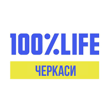

Сучасне оснащення · Понад 50 років досвіду
Кваліфікована консультативно-діагностична та лікувальна допомога. Турбота про кожного пацієнта — наш головний пріоритет.
0+
років досвіду
0+
відділень
0+
спеціалістів
24/7
● Заразприймальне відд.
50+
років якісної медицини
Наша лікарня — наша гордість
КНП «Уманська ЦРЛ» забезпечує жителів регіону кваліфікованою консультативно-діагностичною та лікувальною допомогою. Впроваджуємо сучасні протоколи, оновлюємо обладнання та підвищуємо кваліфікацію персоналу.
Ліцензована допомога
Держстандарти якості
200+ спеціалістів
Лікарі вищої категорії
Прийом 24/7
Без вихідних та свят
Структура
Терапевтичне
Діагностика та лікування внутрішніх захворювань
Хірургічне
Планові та ургентні оперативні втручання
Кардіологічне
Серцево-судинні захворювання та кардіохірургія
Неврологічне
Захворювання нервової системи
Акушерське та гінекологічне
Ведення вагітності та пологова допомога
Реанімація та інтенсивна терапія
Невідкладна допомога та реанімація
Педіатричне
Медична допомога дітям всіх вікових груп
Ваше здоров'я
Найвірнішим вибором є не зволікати з обстеженням при скаргах на здоров'я, а негайно звернутися за кваліфікованою медичною допомогою.
Послуги та програми
Консультації, аналізи та діагностика з прозорим ціноутворенням
Безкоштовні та пільгові ліки для пацієнтів з хронічними захворюваннями
Пріоритетне обслуговування та розширені медичні гарантії
Профілактичні щеплення для дітей та дорослих за Нац. календарем
Відкрита фінансова звітність та держзакупівлі Prozorro
Матеріали про здоров'я, профілактику та здоровий спосіб життя
Актуальні новини та корисні поради

Між Міністерством у справах ветеранів України та БО «100% ЖИТТЯ ЧЕРКАСИ» укладено відповідний договір, що надає право забезпечувати надання послуг на території Черкаської…
Контакти
Графік роботи